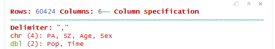

pacman::p_load(plotly, tidyverse, DT, ggiraph, patchwork, ggstatsplot, GGally, corrplot)Take-home Exercise 1
Introduction
Background
Singapore is a highly urbanized and densely populated nation, where population distribution varies significantly across regions and demographic groups. Gaining insights into these spatial and age-related patterns is critical for informed urban planning, resource allocation, and policy formulation.
Objectives
This take-home exercise aims to uncover key demographic insights from Singapore’s 2024 resident population dataset. Specifically, it seeks to:
Analyze the age structure across planning areas
Explore gender ratios across different regions
Identify regions with higher concentrations of children or elderly residents
Getting Started
Tools Used
The following R packages were utilized for data pre-processing and visualization:
tidyverse: Provides a collection of packages (includingdplyr,ggplot2,readr) for data manipulation, transformation, and visualization. It forms the core of data wrangling and plotting throughout this analysis.ggiraph: Enables interactive versions ofggplot2graphics, allowing for tooltips and hover interactions in visualizations such as the population pyramid and bar charts.plotly: Used to render interactiveggplotoutputs in cases likeggplotly()if included (though in your shared code, the output rendering is primarily done viagirafe()fromggiraph).DT: Provides a wrapper for the JavaScript DataTables library. It is used to display interactive, searchable, and scrollable HTML tables, useful for previewing datasets after each cleaning step.patchwork: A layout manager for combining multipleggplot2plots into a cohesive visual grid using a simple and expressive syntax likeplot1 + plot2. It helps in creating dashboards or side-by-side comparisons.ggstatsplot: Simplifies statistical visualization by integrating results such as p-values, effect sizes, and confidence intervals directly intoggplot2charts. Useful for comparing group differences and testing statistical significance visually.GGally: Extendsggplot2by adding functions likeggpairs()for plotting pairwise relationships between variables. It is particularly useful in exploratory data analysis to visualize correlations and distributions across multiple dimensions.corrplot: Specializes in visualizing correlation matrices through heatmaps, circle plots, and color gradients. Helps in identifying variable relationships and multicollinearity in datasets.
Data Source
The dataset originates from Singapore’s Department of Statistics (DOS) and contains:
PA: Planning AreaSZ: SubzoneAge: Age (ranging from 0 to 100+)Sex: Gender (Males / Females)Pop: Number of residentsTime: Year of observation (2024)
Data Wrangling
Import Data
respop <- read_csv("data/respopagesex2024.csv")
Data Cleaning
To ensure the dataset is clean and ready for analysis, the following steps were performed:
Step 1: Remove Duplicates
Remove any duplicated rows to avoid double-counting:
respop <- distinct(respop)
DT::datatable(head(respop), options = list(scrollX = TRUE), caption = "After Removing Duplicates")Step 2: Handle Missing Values
Ensure there are no missing or malformed entries in critical columns:
respop <- drop_na(respop)
DT::datatable(head(respop), options = list(scrollX = TRUE), caption = "After Dropping Missing Values")Step 3: Standardize Age Format
The Age column includes a non-numeric category "90_and_Over" which cannot be coerced into an integer. We convert this category into a numeric age of 90, representing a minimum estimate for analysis:
respop <- respop %>%
mutate(Age = ifelse(Age == "90_and_Over", "90", Age),
Age = as.integer(Age))
DT::datatable(head(respop), options = list(scrollX = TRUE), caption = "After Converting Age Format")
Note
This allows us to include elderly population data in age-based analyses such as population pyramids and dependency ratios.
Step 4: Convert Column Types
Ensure categorical and numeric columns are properly formatted:
respop <- respop %>%
mutate(
Sex = as.factor(Sex),
PA = as.factor(PA),
SZ = as.factor(SZ)
)
DT::datatable(head(respop), options = list(scrollX = TRUE), caption = "After Converting Column Types")Exploratory Data Analysis (EDA)
This section explores Singapore’s 2024 resident population by analyzing age structure, gender ratios, and total population distribution across planning areas. All visualizations use techniques introduced during our hands-on exercises.
Population Pyramid of Singapore by Age Group
This section creates an interactive population pyramid for the entire Singapore resident population in 2024. It groups ages into 5-year intervals and displays male and female populations using diverging bars. Tooltips appear when hovering over each bar.
Step 1: Load Libraries
We use tidyverse for data manipulation and ggiraph for interactive plotting.
library(tidyverse)
library(ggiraph)Step 2: Prepare Population Pyramid Data with Age Groups and Tooltips
Convert age to numeric;
Bin ages into groups like
"0–4","5–9", …;Summarize population by
SexandAgeGrp;Make male population negative to mirror the pyramid;
Add a
tooltip_textcolumn for interactive tooltips.
pyramid_sg <- respop %>%
mutate(
Age = as.numeric(Age),
AgeGrp = cut(
Age,
breaks = c(0, 4, 9, 14, 19, 24, 29, 34, 39, 44, 49,
54, 59, 64, 69, 74, 79, 84, 89, 94, 99, Inf),
labels = c("0-4", "5-9", "10-14", "15-19", "20-24",
"25-29", "30-34", "35-39", "40-44", "45-49",
"50-54", "55-59", "60-64", "65-69", "70-74",
"75-79", "80-84", "85-89", "90-94", "95-99", "100+"),
right = FALSE
)
) %>%
group_by(Sex, AgeGrp) %>%
summarise(Pop = sum(Pop), .groups = "drop") %>%
mutate(
Pop_signed = ifelse(Sex == "Males", -Pop, Pop),
Label = paste0(round(Pop / 1000), "k"),
tooltip_text = paste0("Age Group: ", AgeGrp,
"<br>Sex: ", Sex,
"<br>Population: ", format(Pop, big.mark = ","))
)Step 3: Build Interactive ggplot Object
We use geom_bar_interactive() from ggiraph to: Create diverging bars (left = males, right = females), Attach the tooltip text, Color-code by gender.
max_val <- max(pyramid_sg$Pop)
pyramid_male <- pyramid_sg %>% filter(Sex == "Males")
pyramid_female <- pyramid_sg %>% filter(Sex == "Females")
gg <- ggplot(pyramid_sg, aes(x = AgeGrp, y = Pop_signed, fill = Sex,
tooltip = tooltip_text, data_id = AgeGrp)) +
geom_bar_interactive(stat = "identity", width = 0.8) +
geom_text(data = pyramid_male,
aes(label = Label),
hjust = 1.1, size = 3, color = "black") +
geom_text(data = pyramid_female,
aes(label = Label),
hjust = -0.1, size = 3, color = "black") +
coord_flip() +
scale_y_continuous(limits = c(-1.1 * max_val, 1.1 * max_val),
labels = ~ paste0(abs(.x / 1000), "k")) +
scale_fill_manual(values = c("Males" = "#1f77b4", "Females" = "#ff7f0e")) +
theme_minimal() +
labs(title = "Interactive Population Pyramid of Singapore (2024)",
x = "Age Group", y = "Population", fill = "Sex")Step 4: Render as Interactive Widget
We finally call girafe() to render the interactive graphic. We also customize the tooltip style using CSS.
girafe(ggobj = gg,
width_svg = 8, height_svg = 6,
options = list(
opts_tooltip(css = "background-color:white; color:black; border:1px solid gray; padding:5px;"),
opts_hover(css = "fill-opacity:0.8;cursor:pointer;")
))
Interpretation
The population pyramid clearly visualizes demographic trends such as a strong middle-aged working population and a gradually tapering older population, indicative of an aging society with slowing birth rates.
Gender Ratio by Planning Area
This section displays the male-to-female population ratio for each Singapore planning area. It uses color to indicate whether an area has more males, more females, or is balanced, and includes interactive tooltips for details.
Step 1: Load Required Libraries
We use tidyverse for data wrangling and ggiraph for creating interactive graphics.
library(tidyverse)
library(ggiraph)Step 2: Calculate Gender Ratio and Prepare Tooltip
- Group data by
PAandSex; - Summarize total male and female population;
- Calculate the gender ratio (
Males / Females); - Classify each area into
"More Males","More Females", or"Balanced"; - Filter out areas with very small populations (
Total_Pop <= 100); - Add a
Tooltipcolumn to be displayed when hovering.
gender_ratio <- respop %>%
group_by(PA, Sex) %>%
summarise(Total = sum(Pop), .groups = "drop") %>%
pivot_wider(names_from = Sex, values_from = Total) %>%
mutate(Total_Pop = Males + Females) %>%
filter(Total_Pop > 100) %>%
mutate(
Ratio = round(Males / Females, 2),
Status = case_when(
Ratio > 1.05 ~ "More Males",
Ratio < 0.95 ~ "More Females",
TRUE ~ "Balanced"
),
Tooltip = paste0("Planning Area: ", PA,
"\nMales: ", format(Males, big.mark = ","),
"\nFemales: ", format(Females, big.mark = ","),
"\nRatio (M/F): ", Ratio),
Label = as.character(Ratio)
)Step 3: Create the ggplot Object with Interactive Bars
We create a horizontal bar chart with:
Color-coded bars based on
Status;Tooltip on hover (using
geom_col_interactive);Labels showing exact ratio values;
Smaller y-axis text for better readability.
gg <- ggplot(gender_ratio,
aes(x = reorder(PA, Ratio), y = Ratio,
fill = Status,
tooltip = Tooltip, data_id = PA)) +
geom_col_interactive(width = 0.7) +
geom_text(aes(label = Label),
hjust = -0.1, color = "black", size = 3) +
scale_fill_manual(values = c("More Males" = "#1f77b4",
"More Females" = "#ff7f0e",
"Balanced" = "#66c2a5")) +
coord_flip() +
theme_minimal() +
theme(
axis.text.y = element_text(size = 7),
plot.margin = margin(r = 20)
) +
labs(title = "Interactive Gender Ratio by Planning Area (M/F)",
x = "Planning Area", y = "Male-to-Female Ratio")Step 4: Render Interactive Widget
We use girafe() to display the chart with hover tooltips and styling.
girafe(ggobj = gg,
width_svg = 8, height_svg = 6,
options = list(
opts_tooltip(css = "background-color:white;color:black;border:1px solid gray;padding:5px;"),
opts_hover(css = "fill-opacity:0.8;cursor:pointer;")
))
Interpretation
Most areas show balanced gender distributions, though some regions—such as Sungei Kadut and Changi—exhibit significant gender disparities, which may be related to industrial land use or specific housing demographics.
Total Population by Planning Area
This section presents the total 2024 population for each planning area in Singapore using an interactive bar chart. Tooltips reveal the exact population figures on hover, and low-population areas are excluded to improve readability.
Step 1: Load Required Libraries
We load tidyverse for data manipulation and ggiraph for interactive plotting.
library(tidyverse)
library(ggiraph)Step 2: Aggregate and Filter Population Data
Group the dataset by
PA(planning area);Summarize total population (
Total_Pop);Filter out areas with negligible population (e.g., below 100);
Add a
Tooltipcolumn with formatted text for display.
total_pop <- respop %>%
group_by(PA) %>%
summarise(Total_Pop = sum(Pop), .groups = "drop") %>%
filter(Total_Pop > 100) %>%
mutate(
Tooltip = paste0("Planning Area: ", PA,
"\nPopulation: ", format(Total_Pop, big.mark = ",")),
Label = paste0(round(Total_Pop / 1000), "k")
)Step 3: Build Interactive ggplot Object
Reorder planning areas by total population;
Add tooltips via
geom_col_interactive();Flip coordinates for clearer labels;
Set minimalist theme and small font for y-axis.
max_val <- max(total_pop$Total_Pop)
gg <- ggplot(total_pop, aes(x = reorder(PA, Total_Pop), y = Total_Pop,
tooltip = Tooltip, data_id = PA)) +
geom_col_interactive(fill = "#2ca02c", width = 0.7) +
geom_text(aes(label = Label),
hjust = -0.1, color = "black", size = 3) +
coord_flip() +
scale_y_continuous(
labels = ~ paste0(.x / 1000, "k"),
limits = c(0, max_val * 1.1)
) +
theme_minimal() +
theme(axis.text.y = element_text(size = 7),
plot.margin = margin(r = 30)) +
labs(title = "Interactive Total Population by Planning Area (2024)",
x = "Planning Area", y = "Total Population")Step 4: Render Interactive Widget
We render the final output using girafe(), and customize the tooltip style with CSS.
girafe(ggobj = gg,
width_svg = 8, height_svg = 6,
options = list(
opts_tooltip(css = "background-color:white;color:black;border:1px solid gray;padding:5px;"),
opts_hover(css = "fill-opacity:0.8;cursor:pointer;")
))
Interpretation
Highly populated areas such as Tampines, Bedok, and Sengkang stand out, reinforcing their role as major residential zones requiring more public services, infrastructure, and transport support.
Summary
This analysis revealed critical insights into Singapore’s 2024 population:
Age Profile
Regions like Punggol, Sengkang, and Tampines are home to younger populations; Bukit Timah and Queenstown have a higher share of elderly residents.
Gender Balance
Most areas are gender-balanced, though industrial zones show skewed ratios.
Population Concentration
Dense residential areas cluster around northeastern and central regions, highlighting where urban planning efforts should be prioritized.
Conclusion
Conclusion
This take-home exercise demonstrates how demographic data—when effectively cleaned, grouped, and visualized—can provide valuable insights for government and planners. Visualizing age structures, gender distribution, and population concentrations can guide more equitable and efficient decisions in housing, transportation, healthcare, and education.